Peapod 用户手册 - 清洁人员指南
版本： v0.19.0 | 更新： 2025年12月27日 | 平台： iOS
← 返回目录
目录
6. 清洁人员指南
6.1 概述
作为清洁人员，您负责：🧹 查看并完成清洁任务、📸 上传照片验证、⚠️ 报告问题、💬 与房东沟通。
系统特点： 任务自动与预订同步、智能分配基于距离/可用性/绩效、房东评分影响任务分配。
底部导航（5个标签）： 仪表盘 | 任务 | 日历 | 消息 | 个人资料
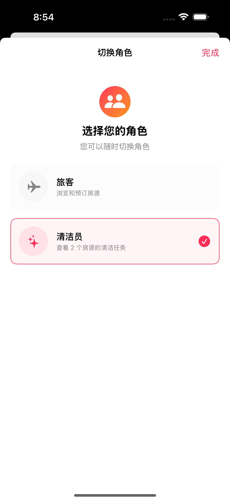
角色切换： 多角色账户可在个人资料页点击”切换角色”切换视图，当前角色显示在用户名下方。
6.2 仪表盘
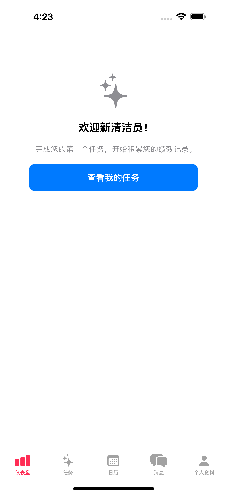
位置： 底部标签 → “仪表盘”
新用户界面： 显示”欢迎新清洁员！“欢迎语、提示完成第一个任务开始积累绩效记录、蓝色”查看我的任务”按钮跳转到任务列表。
有绩效后显示： 绩效等级徽章、平均评分（1-5星）、已完成任务数、准时率、详细评分（清单准确率、照片质量、准时性）。
低评分警告： 评分持续较低时显示橙色警告横幅。
6.3 任务
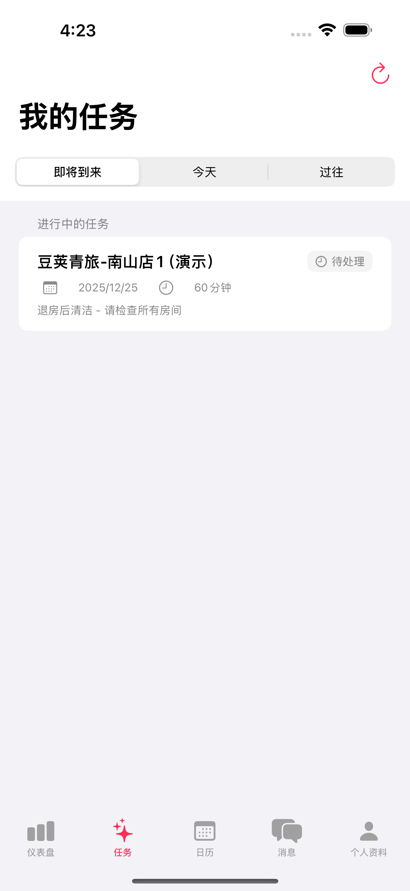
位置： 底部标签 → “任务”
页面标题： “我的任务”
三个筛选器： 即将到来（默认）| 今天 | 过往
任务卡片显示： 房产名称（如”豆荚青旅-南山店1”）、日期和预计时长（如”2025/12/25 · 60分钟”）、状态徽章（待处理/进行中/已完成）、房东备注（如”退房后清洁 - 请检查所有房间”）
6.3.1 任务详情
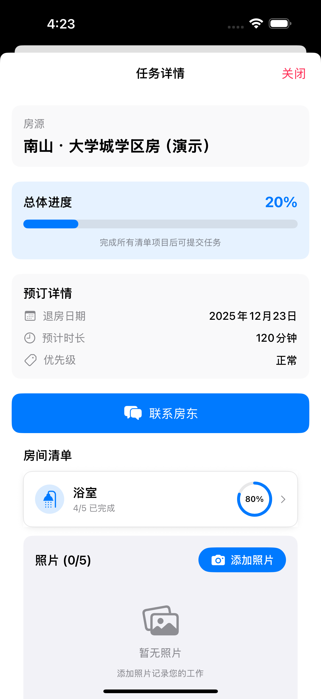
打开方式： 点击任务卡片
任务信息：
- 房源： 房产名称和地址
- 总体进度： 百分比 + 进度条（如”20%“）
- 预订详情： 退房日期、预计时长、优先级
- 联系房东： 蓝色按钮直接发消息
房间清单： 按房间分类显示（浴室、卧室、厨房等），每个房间显示完成进度（如”4/5已完成 80%“），点击展开查看具体清单项目。
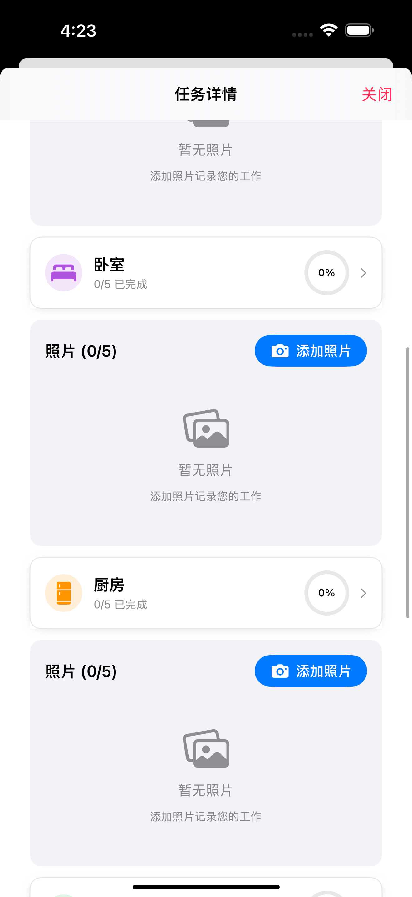 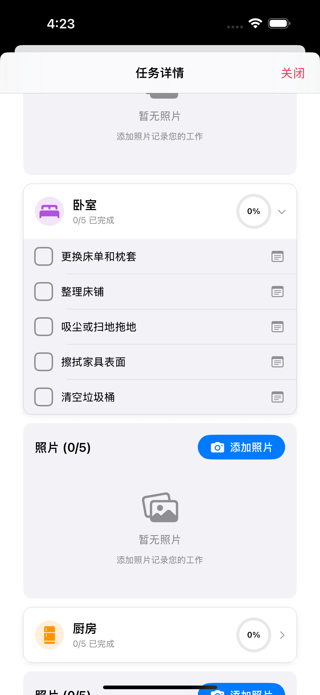
展开清单（右图）： 点击房间展开显示具体清单项目，如卧室包含：更换床单和枕套、整理床铺、吸尘或扫地拖地、擦拭家具表面、清空垃圾桶。
照片上传： 每个房间下方有独立的照片区域，显示”照片 (0/5)“和”添加照片”按钮，必须为每个房间上传至少1张照片。
6.3.2 完成任务
开始： 点击”开始任务” → 状态变为”进行中” → 房东收到通知
清单： 点击复选框标记完成，进度实时同步到房东，必须勾选所有项目
照片要求： 每个房间至少1张，建议拍摄整理好的床铺、干净地板、清洁后的浴室/厨房
完成： 所有清单已勾选 + 照片已上传 → 点击”标记完成”
6.3.3 报告问题
报告时机： 损坏、缺失物品、维护需求、入门问题、用品短缺
操作： 任务详情 → “报告问题” → 选择类型 → 添加描述 → 上传照片 → 提交
⚠️ 损坏/缺失物品/维护问题必须附照片
6.4 日历
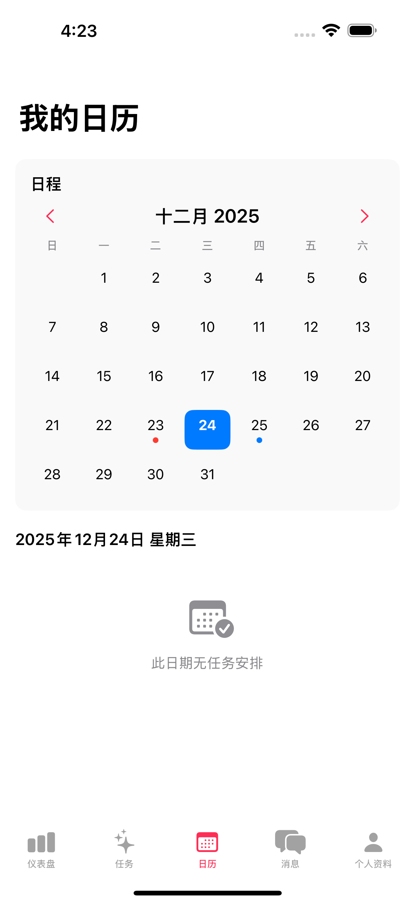
位置： 底部标签 → “日历”
页面标题： “我的日历”
月历视图： 显示当月日历，可左右切换月份
颜色标记：
- 🔴 红点 - 逾期任务（过去日期有未完成任务）
- 🔵 蓝点 - 待处理任务（未来有待处理任务）
- 🔵 蓝色背景 - 今天/选中日期
日期详情： 点击日期显示当天任务列表，无任务时显示”此日期无任务安排”
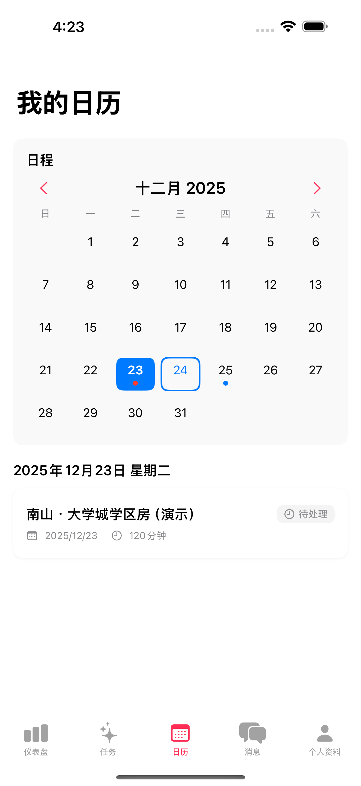 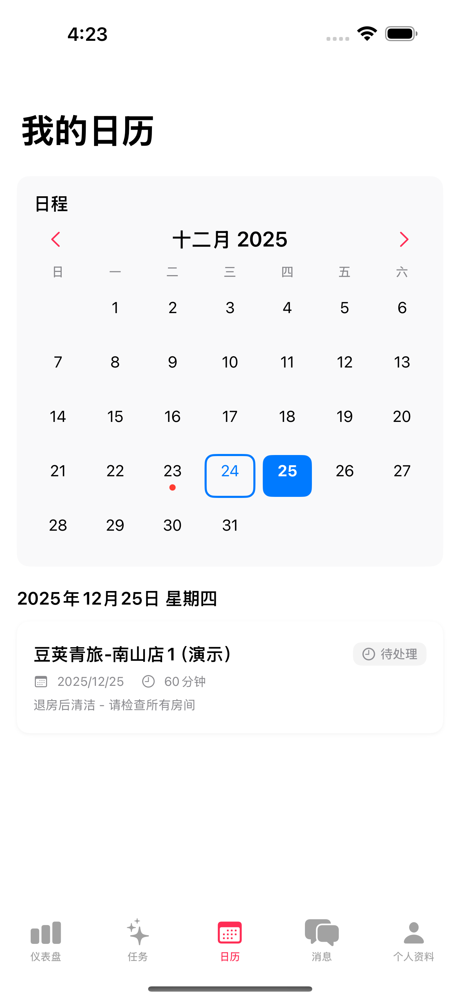
逾期任务（左图）： 点击红点日期（如12月23日）显示未完成任务卡片，包含房产名称、日期、时长、状态徽章”待处理”
待处理任务（右图）： 点击蓝点日期（如12月25日）显示即将到来的任务卡片，包含房产名称、日期、时长、房东备注
6.5 消息
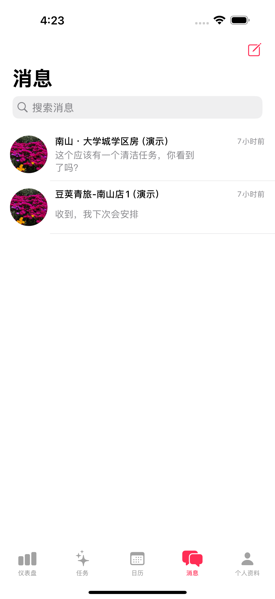
位置： 底部标签 → “消息”
搜索框： 顶部”搜索消息”可按房产或内容搜索
对话列表： 显示房产头像、房产名称、最新消息预览、时间（如”6小时前”）
可消息对象： 房产房东、联合房东
消息内容： 确认任务、询问房产问题、报告问题、通知延迟
6.6 个人资料
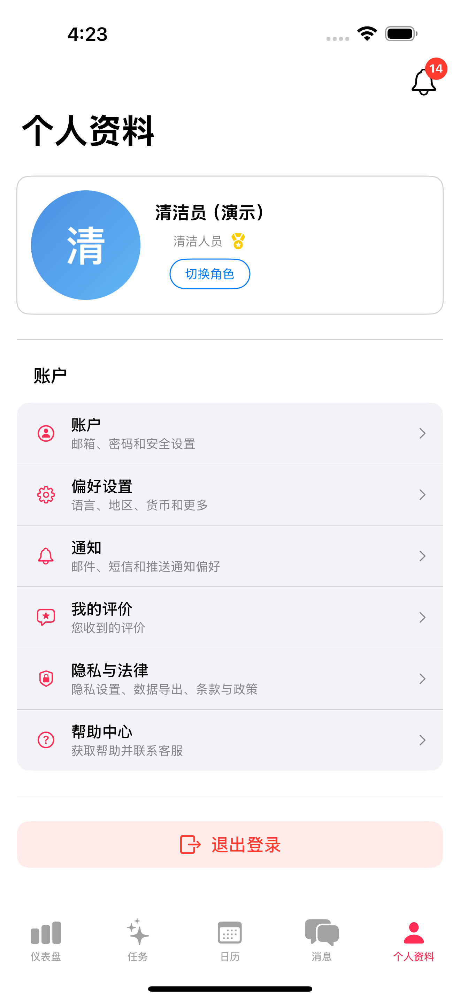
位置： 底部标签 → “个人资料”
用户卡片： 头像（显示”清”字）、用户名、角色标识”清洁人员”、“切换角色”按钮
设置菜单：
- 账户 - 邮箱、密码和安全设置
- 偏好设置 - 语言、地区、货币和更多
- 通知 - 邮件、短信和推送通知偏好
- 我的评价 - 您收到的评价
- 隐私与法律 - 隐私设置、数据导出、条款与政策
- 帮助中心 - 获取帮助并联系客服
退出登录： 底部红色按钮
通知徽章： 右上角铃铛显示未读通知数量